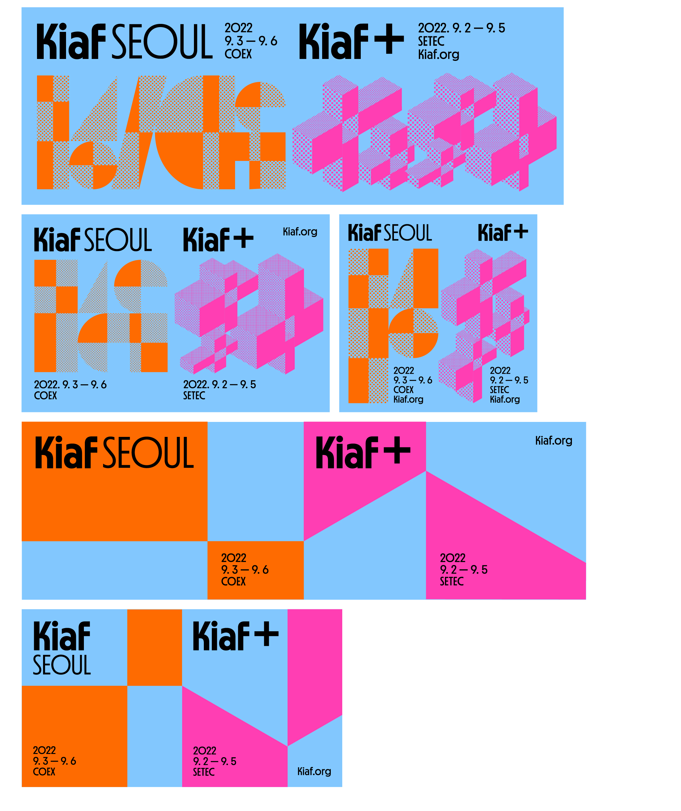
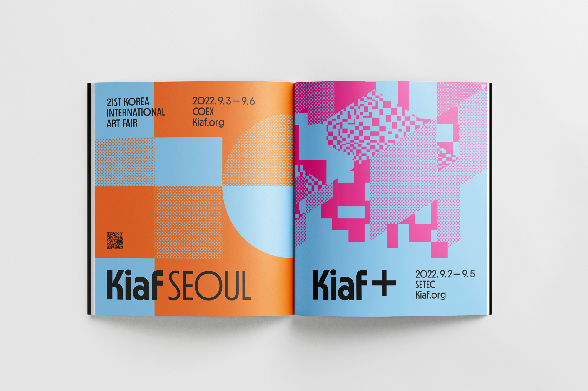
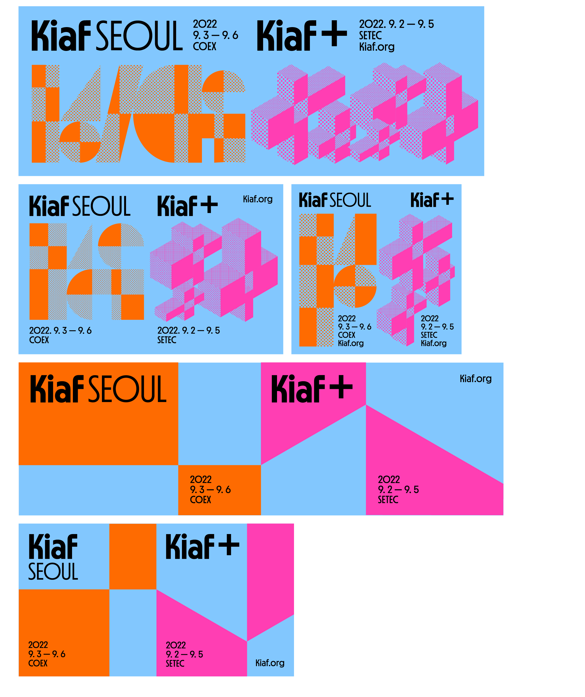
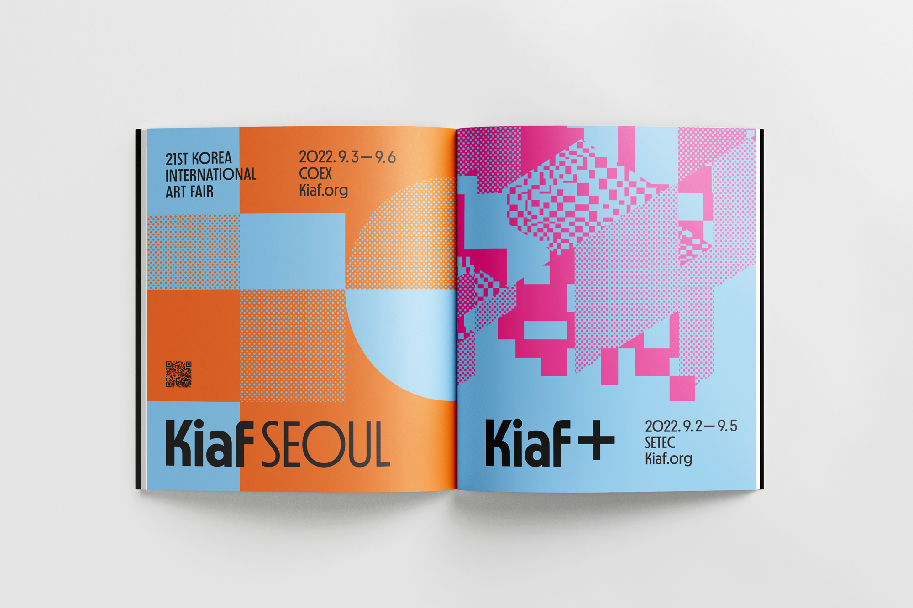

Kiaf 2022
(Kiaf SEOUL, PLUS)
Online, Offline ADs
(Kiaf SEOUL, PLUS)
Online, Offline ADs
스튜디오 fnt는 2021년 키아프 20주년 기념 행사를 위해 새로운 비주얼 아이덴티티 시스템을 구축하고, 이를 기반으로 관련 그래픽 디자인을 선보였습니다. 올해도 마찬가지로 제21회 키아프
전시회의 그래픽 개발을 맡았습니다. 또한, 올해 처음 선보이는 키아프 플러스의 전시 아이덴티티와 이벤트 그래픽도 새롭게 디자인했습니다.
키아프 플러스는 NFT, 뉴미디어 아트 등 다양한 장르를 다루며 젊은층을 타겟으로 하고 있습니다. 이를 염두에 두고 예술의 확장과 미디어의 다양화 측면을 표현하고 싶었습니다. 이를 위해 우리는 도트 기반의 인쇄 미디어에서 픽셀 기반의 스크린 미디어로, 2D에서 3D로, 공간에서 시간으로, 유형에서 가상으로 다루었습니다.
온, 오프라인 광고를 제작했습니다. 2022에는 시선을 사로잡고 강렬한 인상을 남기기 위하여 적극적으로 모션을 활용하여 배너 광고를 전개했습니다.
키아프 플러스는 NFT, 뉴미디어 아트 등 다양한 장르를 다루며 젊은층을 타겟으로 하고 있습니다. 이를 염두에 두고 예술의 확장과 미디어의 다양화 측면을 표현하고 싶었습니다. 이를 위해 우리는 도트 기반의 인쇄 미디어에서 픽셀 기반의 스크린 미디어로, 2D에서 3D로, 공간에서 시간으로, 유형에서 가상으로 다루었습니다.
온, 오프라인 광고를 제작했습니다. 2022에는 시선을 사로잡고 강렬한 인상을 남기기 위하여 적극적으로 모션을 활용하여 배너 광고를 전개했습니다.
Related Projects
- Kiaf SEOUL 2022 Exhibition Displays
- Kiaf PLUS Exhibition Displays
- Kiaf 2022 Online, Offline ADs
- Kiaf 2021 Exhibition Displays
- Kiaf SEOUL 2022 Exhibition Displays
- Kiaf PLUS Exhibition Displays
- Kiaf 2022 Online, Offline ADs
- Kiaf 2021 Exhibition Displays
Field
Graphic
Date
2022. 08
Team
Worked for studio fnt
- Art direction: Woogyung Geel
- Exhibition identity: Hyungwon Cho, Youjeong Lee
- Graphic design: Youjeong Lee, Ajeong Kim,Younghyun Song
- Motion design: Ajeong Kim
- Catalog design: Doyeon Yang (plast)
- Photo: Creative Silver, courtesy of Kiaf SEOUL
- Art direction: Woogyung Geel
- Exhibition identity: Hyungwon Cho, Youjeong Lee
- Graphic design: Youjeong Lee, Ajeong Kim,Younghyun Song
- Motion design: Ajeong Kim
- Catalog design: Doyeon Yang (plast)
- Photo: Creative Silver, courtesy of Kiaf SEOUL
 





{kind=link}
{kind=link}
Online ADs
Ocula, Art review, Flash art, Art asia pacific, Artfacts, 퍼블릭아트, 한국관광공사, Artprice, Artling
의 온라인 광고 배너 이미지를 제작했습니다.
Offline - Magazine
Flash art, Art asia pacific, Plus, 월간미술, 퍼블릭아트, 아트인컬쳐, 노블레스, 월간사진, 아트나우, 마리끌레르의 오프라인 광고 매거진 페이지를 제작했습니다.
Ocula, Art review, Flash art, Art asia pacific, Artfacts, 퍼블릭아트, 한국관광공사, Artprice, Artling
의 온라인 광고 배너 이미지를 제작했습니다.
Offline - Magazine
Flash art, Art asia pacific, Plus, 월간미술, 퍼블릭아트, 아트인컬쳐, 노블레스, 월간사진, 아트나우, 마리끌레르의 오프라인 광고 매거진 페이지를 제작했습니다.
×